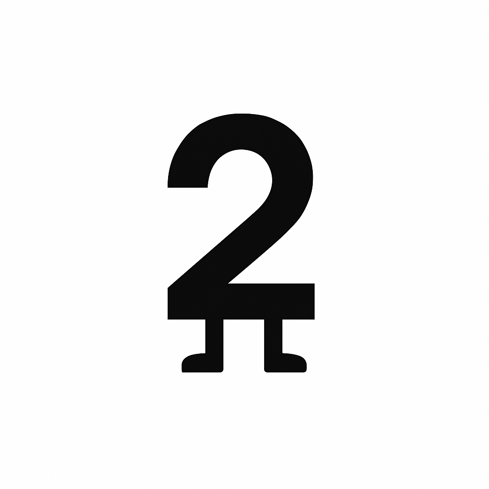
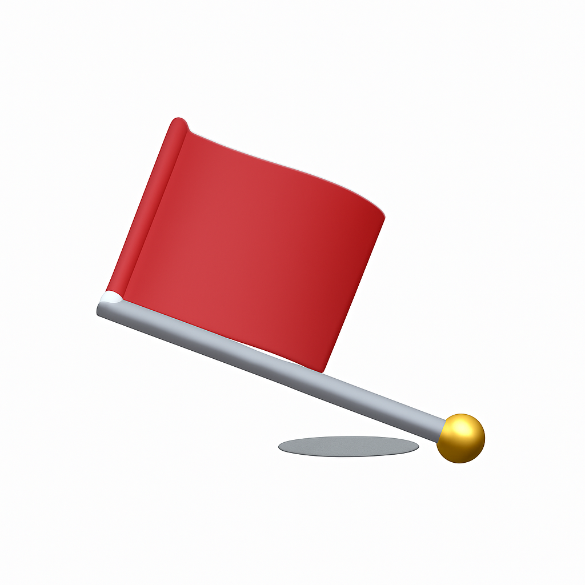
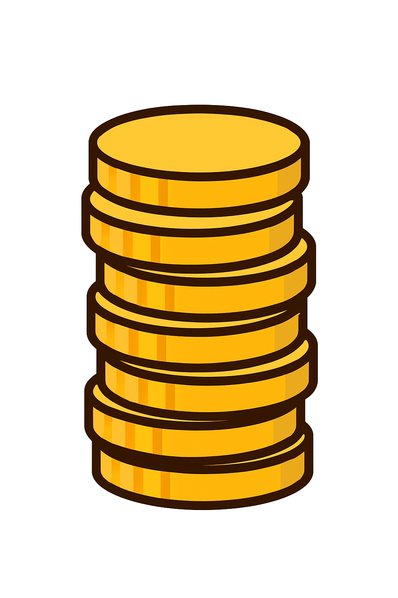
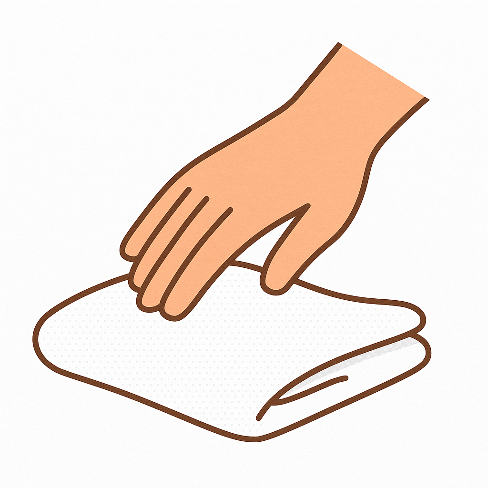
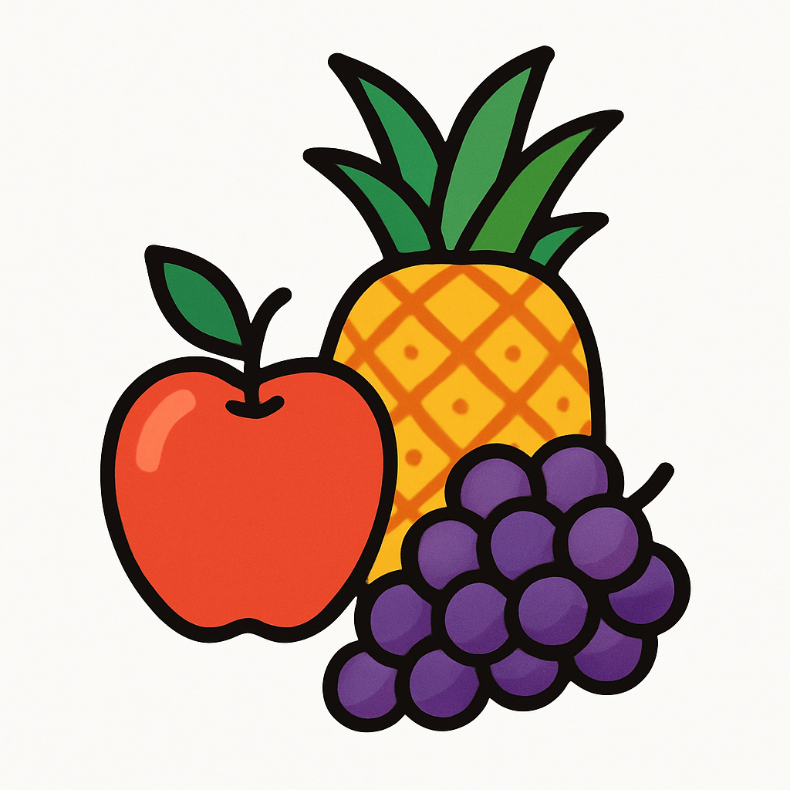
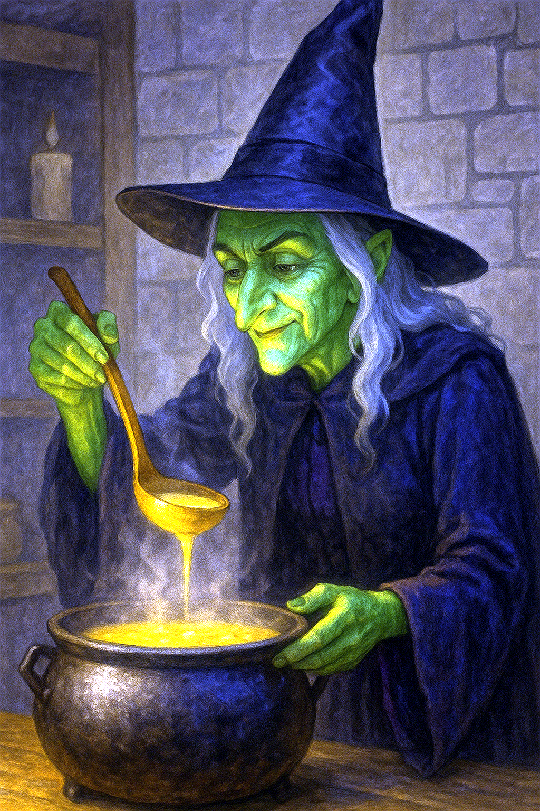
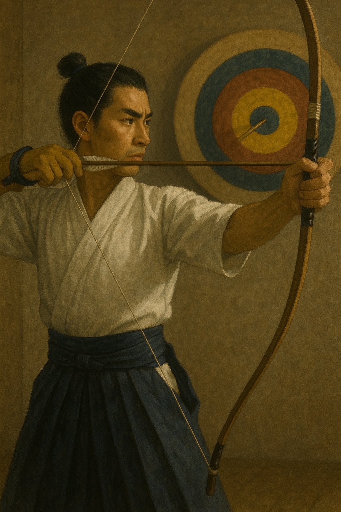

A single mouth speaks—just one thought, only one voice.
👄 + △ → 🐥
On: シ ・ Kun: ただ
💡

↑ Back to Top
She picked up a small shell and said, “In the old days, this was money.”
👀 + △ →🦪
On: バイ ・ Kun: かい
💡

↑ Back to Top
He sang into a comb like it was a mic, pretending he was on a karaoke stage.
👄 + →🦪
On: -- ・ Kun: うた
💡

↑ Back to Top
Even when others wavered, she stood upright like a pillar of truth.
🔮 + 🦪
On: テイ ・ Kun: さだ
💡

↑ Back to Top
He wore a uniform and badge—not just a worker, but part of a team.
👄 + 🦪
On: イン ・ Kun: --
💡
↑ Back to Top
He smoothed the paper on the wall and pressed it down with care—“Posters speak for the silent.”
🦪 + 🔮
On: チョウ ・ Kun: は-る
💡

↑ Back to Top
She cupped her hand over her eyes and whispered, “I see it—just beyond the hill.”
👀 + 🦵
On: ケン ・ Kun: み-る、み-える、み-せる
💡

↑ Back to Top
The baby curled its fingers around his thumb, and he whispered, “So small... so full of life.”
I + 🌞 + 🦵
On: ジ、二 ・ Kun: こ
💡

↑ Back to Top
Before the noise, before the rush—there was just silence and the first breath.
２ + 🦵 → 〰️ (base)
On: ゲン、ガン ・ Kun: もと
💡

↑ Back to Top
He turned the yellowed page carefully. “Each one holds a world,” he said.
T + 🌝 → 🧑🦱 (head)
On: ケツ ・ Modern: ページ (🇯🇵)
💡

↑ Back to Top
He crossed his arms, planted his feet, and said, “I’m not moving.”
〰️ + 🧑🦱
On: ガン ・ Kun: --
💡

↑ Back to Top
His work wasn’t bad… but never stood out. Just another drop in the sea.
⛵️ + •
On: ボン、ハン ・ Kun: およ-そ
💡

↑ Back to Top
He hung his head and said, “I gave it everything... but it wasn’t enough.”
✂️ + 🦪
On: フ ・ Kun: ま-ける、 ま-かす、 お-う
💡

↑ Back to Top
“One coin won’t do,” she said, dropping a heavy pouch. “This is worth ten thousand.”
1 + 🧣
On: マン、バン ・ Kun: よろず
💡

↑ Back to Top
He paused, then recited a single phrase. Short—but it made everyone go silent.
📦 + 👄
On: ク ・ Kun: --
💡

↑ Back to Top
She brushed the fabric and smiled, “Feel that? Like touching real skin.”
🍗 + ⛵️
On: -- ・ Kun: はだ
💡

↑ Back to Top
“Only ten days,” he said, savoring the bite. “This is the peak of the season.”
📦 + 🌞
On: ジュン、シュン ・ Kun: --
💡

↑ Back to Top

She scooped soup with a wooden ladle, pouring gently like a ritual.
📦 + ・ → 🥄
On: シャク ・ Kun: --
💡

↑ Back to Top

He aimed, held his breath, and released—direct hit to the center.
◻️(white) + 🥄 = 🎯
On: テキ ・ Kun: まと
💡

↑ Back to Top
He wrapped the scarf around her neck. “Keep warm,” he said gently.
🕶️ + 👃 → 😎 (head/leader)
On: シュ ・ Kun: くび
💡

↑ Back to Top
 Shellfish
Shellfish
 Upright
Upright
 Newborn Babe
Newborn Babe

 Page
Page
 Stubborn
Stubborn

 Phrase
Phrase